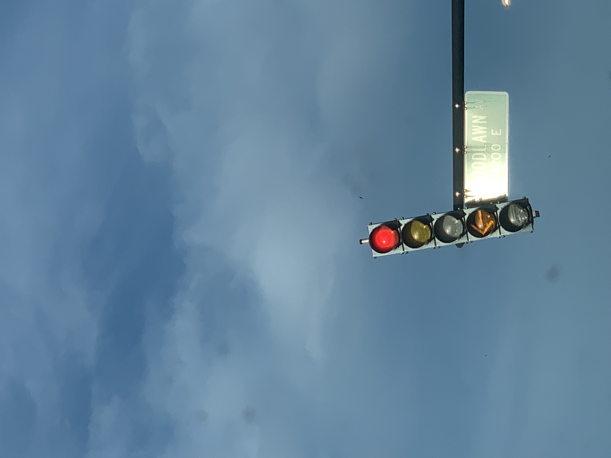
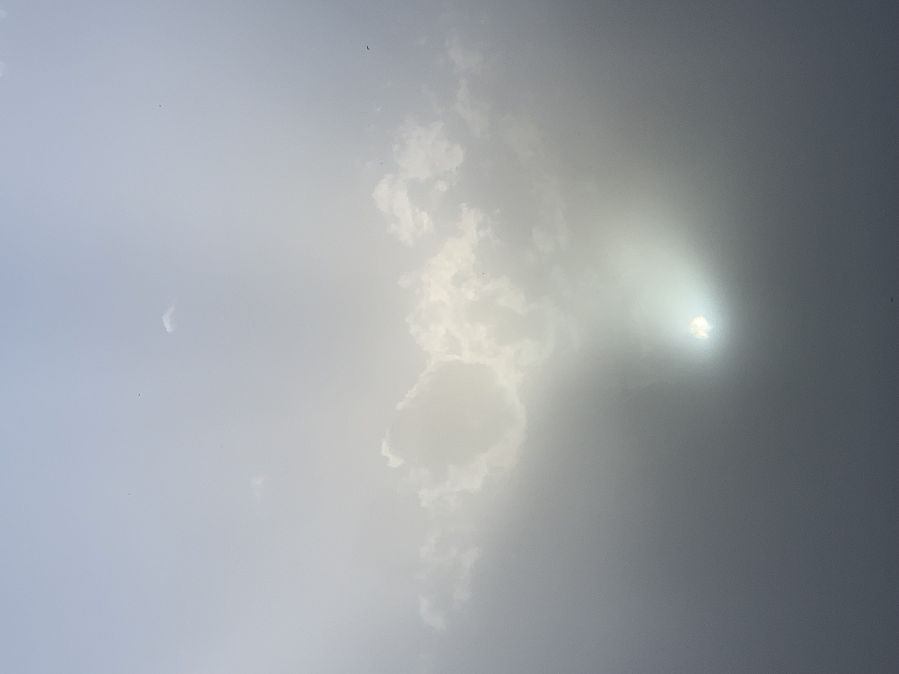
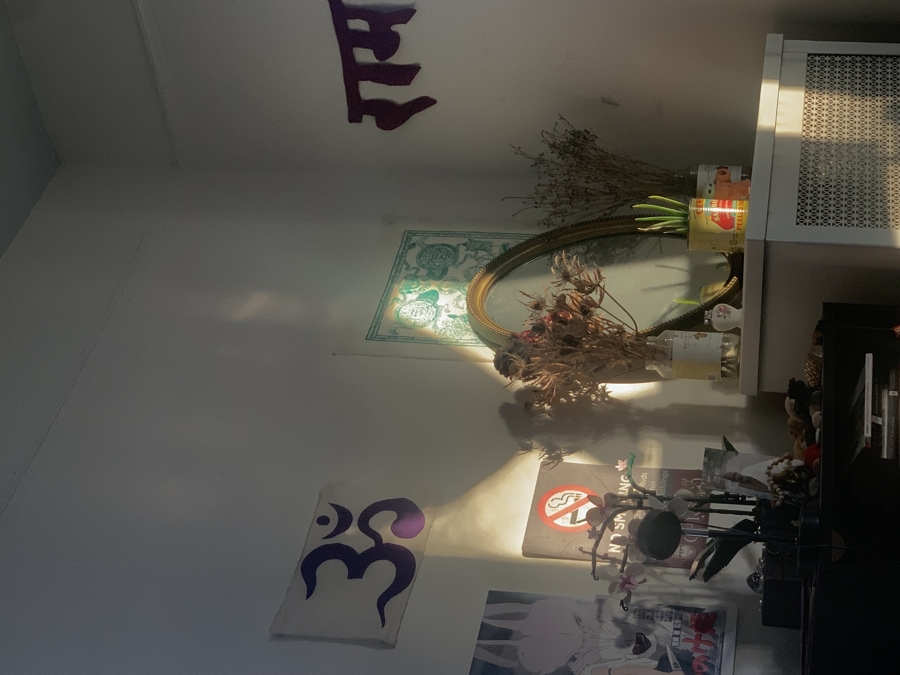
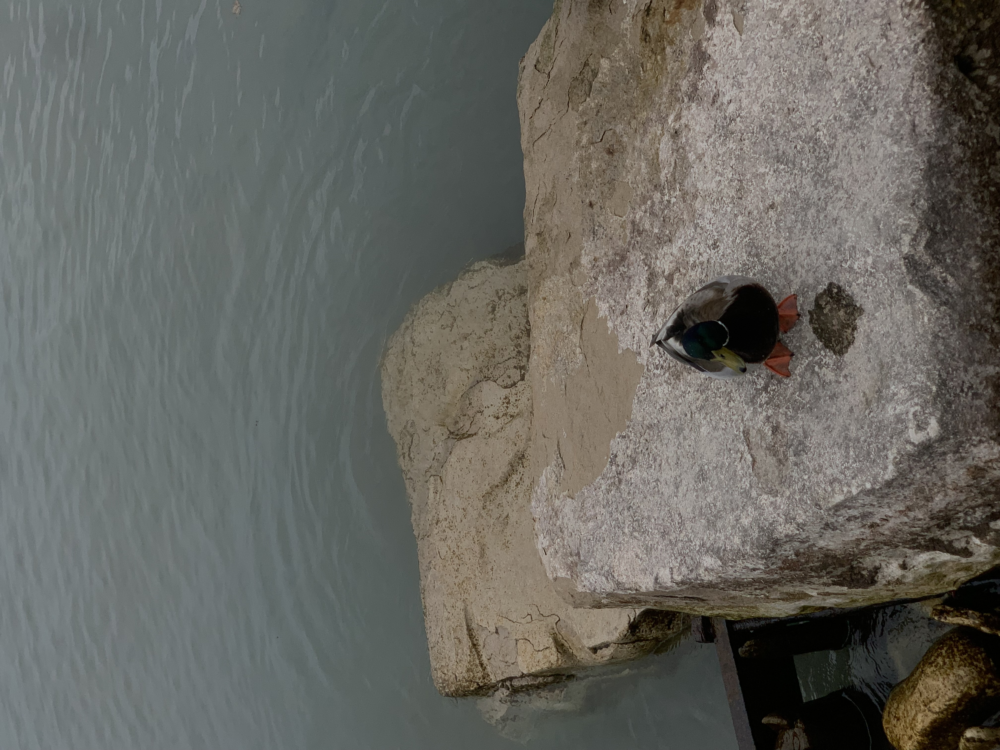
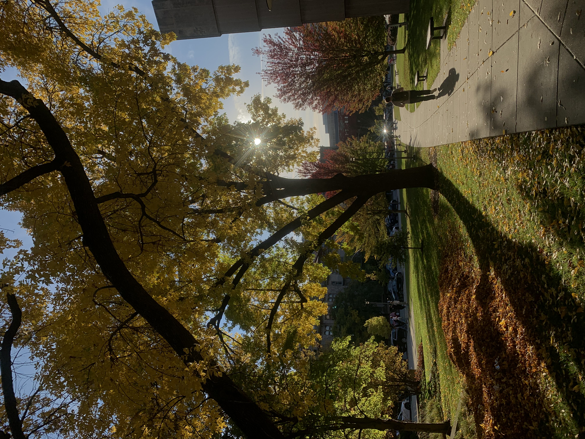

CYCLICITY Kai Breeze
Album Video
Album Concept
Replace this text with your album concept write-up.
You can describe the themes, inspiration, and the story behind "CYCLICITY". Feel free to write multiple paragraphs. This text box will expand as you add more content.

interlude (freestyle)
Song:Description:
this was one of the first instances i recorded myself playing piano about 5 years ago now. i found it searching through old voice recordings and it seemed appropriate to put it as the first song on a heavily piano based album. a full circle moment if you will. the picture attached of course is a red light as a way to represent the album that is about to start, all that has to happen is the light turning green.

truth
Song:Description:
this song really represents the ambiguity of truth as well as its subjectivity. in relationships, individual truth is skewed to a degree. each person having their individual understanding of it. this song represented a moment of that in my own journey of love. knowing the truth, hoping they know too, them knowing differently. the picture attached was at the point during the dust storm. the dust allowed us to look at the sun directly and see the yellow ball in its glory. ironically, the dust showed the TRUTH of the sun. equally, the light pouring out may even suggest the benefit of knowing the truth of things?

i let you fall
Song: Orchestral Fall:Description:
looking at this scene, i honestly felt like the ladder. the only support holding up the person repairing the house. if the ladder moves, it all collapses, no progress is made, the person is hurt. in truth, i was indeed the ladder and i did indeed move. stagnating progress, hurting the climber. for the audio, i recorded this as i observed an orchestra practice through a window. it honestly sounded like something falling, or rising. each individual piece helps the orchestra fall, just as the ladder supports the individual, the instrmuments support eachother.

I LOVED YOU (breathe it in)
Song: Crickets in Taos,NM:Description:
this scene really shows the history and past of my relationships. the dead flowers she used to give me stay on the shelf, ever decaying. the lego flower never decays, a constant reminder that certain types of love dont quite die, they stagnate, they continue to act as simple displays. the audio is taken from my window back home in Taos. it reminds me that no matter what happens, sometimes things dont change. my whole life there have been these crickets, and they will continue long after i die. it reminds me of the eternality of love.

LONESOME
Song: Bird Friends:Description:
this duck came up to me. most likely searching for food, but maybe searching for companionship. there really were no other ducks around. like my song, this duck was truly on its LONESOME. that is until it chose to find company in me i suppose? for the audio, although this song symbolizes loneliness, i found friends amongst the birds that play on my window. this audio shares their songs and reminds me that even when you may feel alone, that is never quite the case. even birds can give company.

hold on
Song: Fishing Line Aeolian Harp:Description:
the bag is anyone who needs to hold on. the tree is anyone willing to help them hold on. in this sense, I felt like the tree offering support for the bag. not necessarily choosing to do so, but helping none the less. ultimately it is the wind, or the strength of the plastic that maintains its grip on the tree. without it, the bag floats into the unknown, drowns in the sea of air and land. am i the bag? the tree? the wind? for the audio, i recorded this back home fishing with my father. the wind was powerful and began to vibrate the string creating what can only be described as an Aeolian Harp. just as the wind may blow the bag to the unknown, it shows that powerful and uncontrollable forces can also create beauty, in this case that beauty is the natural music you hear.

tell me (outro)
Song:Description:
now in all honesty i am unsure i am keeping this song on the album. ive been working on this one for a while now but it doesnt quite match the projects vibe overall? i may replace it with an outro of some degree. but as the title and lyrics suggest, this song is about hoping someone falls for you. it represents the changing seasons and its impact on the fall as well. although i do love this song, do take it with a grain of salt in relation to the rest of the album. the image attached of course represents fall in the seasonal way. with leaves falling just as i hope someone falls for me.